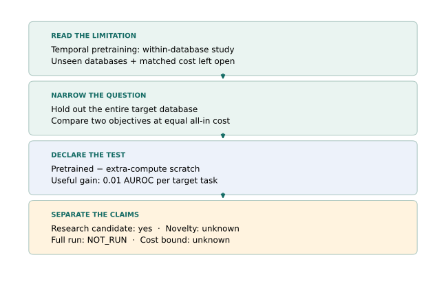
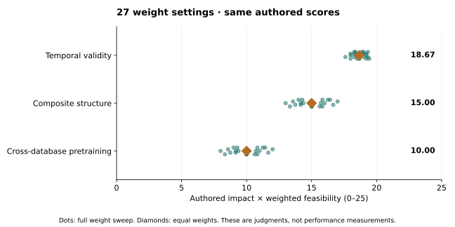

Year 5 · Quarter 3 · Lesson 189
Identify three open problems
From a promising topic to a defensible next experiment
Under construction. This is a reviewable draft. Its saved audit and ranking are available, but the lesson is not certified complete. Lesson 190’s research-gap checkpoint is now available as a worked synthesis.
Your tangible win¶
Turn “this looks promising” into three ranked, falsifiable research questions, then defend the next inexpensive decision. This is how the course mission becomes a research plan: evidence that relational structure adds value must survive strong baselines, time constraints and a finite budget.
15-minute core: read sections 1–4 and change one judgment in the explorer. Optional 30-minute lab: implement three contracts and replay the entire frozen audit. The detailed research cards are reference material for Lesson 190, not three experiments to run today.
Author evidence: COMPLETE_SELECTED_AUDIT — 3 case files, 6 primary sources, 6 inherited receipts, all 27 weight settings. Prediction replay, fresh training and whole-paper reproduction: NOT_RUN. Novelty and complete literature coverage: NOT_ESTABLISHED. Learner: PENDING_WRITTEN_DEFENSE.
Recall before reading¶
Without opening your notes, answer: What distinguishes a support-size sweep from a pretraining scaling law? Why must a prediction be keyed by both entity and cutoff? Why does a within-database gain not establish transfer to an unseen database?
Prerequisite recap. An entity can appear at several prediction times, so its ID alone is not a query identity. A baseline is the comparison method under the same information and selection rules. Pretraining learns before the target task; a database holdout excludes the entire target database from that stage. These distinctions connect L169’s context sweep, L177’s cost accounting and L182’s composite hypothesis. L188’s literature-tracking collection is still incomplete in our frozen receipt; this lesson does not assume it established coverage.
1 · A topic is not yet an open problem¶
“Build a relational foundation model” names a direction. A research question specifies what changes, what stays fixed, which population matters, and which result would change your mind. An open problem also needs a careful account of what the closest work already establishes.
Use the RDL survey, §§2.4 and 5 as a map of temporal, heterogeneous and foundation-model challenges. It was written in 2025; it cannot certify that an idea is new in October 2026.
Worked narrowing. “Does temporal pretraining help?” is already studied. The September 2026 temporal-pretraining paper, §4.4 leaves unseen-database transfer and matched computational cost for further work. Narrow the question to: Does a temporal objective beat extra-compute supervised training on an entirely held-out database at equal total cost? This is a source-backed candidate gap. RT already studies cross-database transfer, so cross-database transfer itself is not the proposed novelty.


A source-stated limitation is a lead, not an exhaustive literature review. We read six selected primary sources and freeze their versions. Novelty remains NOT_ESTABLISHED for all three candidates.
2 · Three questions, three different interventions¶
| Candidate | Change | Keep fixed | First useful decision |
|---|---|---|---|
| Temporal validity | Explicit availability policy | Query identities, labels, model/selection rules | Can every input’s availability be defended? |
| Composite structure | Conventional versus composite encoder | Prior, context, ICL head, compute | Is the proposed graph/head interface trainable? |
| Cross-database pretraining | Source objective and initialization | Target holdout, information, all-in cost | Is there a complete, affordable exclusion/cost contract? |
Temporal validity. L184’s frozen report records 7,838 overwritten query entries across 8,712 queries when indexed by entity alone. That is a local source finding; fixing it is engineering. The research question asks whether matched model comparisons are sensitive to documented availability policies across tasks. If true historical arrival times are unavailable, the result concerns assumptions—not proof of historical leakage. Standardized evaluation already exists in RelArena-α.
Composite structure. RelGNN already provides composite message passing; RDB-PFN already uses relational synthetic priors and DFS. Changing a synthetic generator changes the task distribution. Changing an encoder changes the predictor. A factorial design separates them; fitting an embedding width does not make a released checkpoint compatible. L182’s 21,060 saved-prediction claim belongs to its released-model comparison, not to a hybrid.
Pretraining transfer. A good supervised graph transformer is not evidence that pretraining helps it. Compare against both ordinary scratch training and scratch training allowed the extra compute. Keep the target database out of source preprocessing as well as source gradients. Two target databases remain a narrow study; do not turn repeated seeds into extra databases.
The full cards below state the hypotheses, controls, proposed populations, falsifiers, costs and next decisions. None of their model experiments has been run in L189.
3 · Rank decisions with an explicit rubric¶
Rate impact and feasibility from 1 (low) to 5 (high). Impact means the value of resolving the question, including a negative result. Feasibility has three dimensions: data access, implementation effort and compute. Here feasibility rates the next useful decision; full-experiment cost passes through a separate gate.
| Score | Data access | Implementation | Compute for next decision |
|---|---|---|---|
| 1 | Critical access unresolved | Major new system | Large unbounded run |
| 3 | Public but needs substantial audit | New integration | Bounded pilot needed |
| 5 | Local inputs available | Existing audited path | Small local audit |
Scores 2 and 4 lie between these anchors. Impact anchors: 1 resolves a narrow local inconvenience; 3 changes one useful comparison; 5 could influence a broader model-design decision. These ordinal judgments are not measured probabilities. The arithmetic is a declared decision aid, not a scientifically calibrated utility model.
Priority = impact × (w_data × data + w_impl × implementation + w_compute × compute) / sum(weights).
Temporal validity has impact 4 and feasibility (5,4,5). Equal weights give 4 × 14/3 = 18.67. Composite structure has 5 × (4+3+2)/3 = 15.00. Pretraining transfer has 5 × (3+2+1)/3 = 10.00. Estimated researcher effort to prepare their minimum protocols is respectively 8–16, 24–48 and 40–80 hours; these are planning judgments, not measured completion times or compute prices.
Predict first: which ranking changes if temporal impact drops from 4 to 3? Try it. Then put compute weight at 3. A tie must remain visible.


On a phone, the ranking plot scrolls horizontally; the explorer and results table give the same values without panning.
The executable audit tries all 27 weight triples from {1,2,3}³. Temporal validity leads all 27 at the authored scores. This only shows stability to those weights. At equal weights and temporal impact 3, its score becomes 14, so composite structure leads at 15. Changing the assumptions can change the decision.
4 · Priority is not permission to run¶
Unknown expense is not zero. Count preparation, every training arm and seed, selection, full evaluation, retry reserve and validation. A proposal with any missing phase or an unverified bound stays NOT_ESTABLISHED; a known total above $10 is OVER_CAP. A failed source audit blocks interpretation even when the arithmetic looks affordable. Passing the numerical gate still does not authorize execution.
All three full experiments have unknown cost phases and unfinished execution protocols. The third, for example, needs 12 source fits plus 24 target fits, not one convenient fine-tuning run. The first decision can be inexpensive even when the eventual experiment cannot fit $10.
Falsification example. Before collecting new results, define a useful conditional gain, here a proposed 0.01 AUROC. An interval entirely below that threshold rules out the specified useful gain under the stated uncertainty model. An interval crossing it is inconclusive. A noisy mean or a non-significant p-value is not proof of no effect. Freeze the interval procedure, clustered resampling unit and split policy in the future execution protocol; they are not resolved by this planning audit.
Detailed research cards¶
Which availability assumptions change the model comparison?
Which availability assumptions change the model comparison?¶
Question. Across rel-f1/driver-dnf and rel-trial/study-outcome, does replacing timestamp-only filtering with an explicit availability contract change paired model contrasts?
Hypothesis. A material comparison change persists after preserving every (entity_id, cutoff) query and auditing when each feature and label becomes observable.
Already known. Chronological evaluation and temporal-aware models already exist. L184 reports repeated-entity cache collisions in one source snapshot. L169 context curves do not measure pretraining scaling.
Candidate gap. The proposed contribution is sensitivity of a matched comparison to documented availability assumptions across tasks. Fixing a cache key alone is an engineering repair, not the research claim.
Approach. Represent every query by its complete key; attach evidence for each context cell availability and label-window completion; compare strict known-availability inclusion against timestamp-only inclusion. Treat unknown arrival histories as explicit assumptions.
Matched control. Same cached data release, targets, splits, feature definitions and validation-only selection for RDB-PFN and a flattened tree baseline; two visibility policies. Reuse identical support rows and seeds across policies, with any ineligible support reported before running.
Minimum full comparison — proposed, unrun. 2 tasks × 2 models × 2 visibility policies × 3 seeds = 24 complete fits/evaluations. Full validation/test populations; predeclare one configuration per model, no test tuning. Seal train/validation/test key universes and support schedules before scoring. Independently reconstruct targets first.
Quantity to estimate. For each task and seed, compute (AUROC_PFN − AUROC_tree)_strict − (AUROC_PFN − AUROC_tree)_timestamp. Report each task separately; seed spread is not database uncertainty.
Falsifier and limitation. A preregistered useful absolute change is 0.01 AUROC per task. An interval wholly inside [−0.01,0.01] argues against material sensitivity for that task; overlap is inconclusive. A missing arrival history prevents a historical leakage conclusion, even if policy sensitivity is large.
Related work. survey, temporal, relarena.
Inherited receipts. l184-report.json, l169-report.json, l177-report.json. Reports are authenticated; underlying predictions are not replayed here.
Authored feasibility rationale. Data 5: local full-key snapshots and audit receipts exist; actual historical arrival times remain unknown. Implementation 4: policy masks and keyed scoring are bounded; full DFS availability lineage still needs audit. Compute 5: first useful decision is a CPU key/availability audit, not new pretraining; complete model comparison cost is unverified.
Human effort estimate: 8–16 hours to prepare the protocol. Full-run cost: unverified; all six phases unknown. Next decision: Audit every query key and classify context timestamps as known, assumed or unknown; stop before model runs if the comparison cannot preserve a defensible information contract.
When does a composite operator help a relational foundation learner?
When does a composite operator help a relational foundation learner?¶
Question. Does a composite encoder improve a schema-shared graph encoder plus ICL head beyond a conventional two-hop encoder when priors, labels, information and total compute are matched?
Hypothesis. The composite encoder has positive incremental benefit under a relational prior, beyond any benefit due to switching the pretraining prior itself.
Already known. RelGNN already contributes composite message passing. RDB-PFN uses synthetic relational priors and DFS before its predictor. L182 re-evaluates released predictors, not a trained composite hybrid.
Candidate gap. Separate a predictor-side operator intervention from a generator-side change. A new operator inserted into a released checkpoint is not automatically compatible or a valid experiment.
Approach. Train a graph encoder plus common ICL head from initialization. Cross single-table versus relational priors with conventional two-hop versus composite encoder; keep a separate released DFS+RDB-PFN comparator.
Matched control. Four factorial arms share task counts, hidden width/parameter accounting, optimizer/selection budgets, schema-sharing rules, labeled supports and permissible neighbors. Conventional two-hop control sees the same path endpoints. Add a flattened strong baseline before interpreting practical value.
Minimum full comparison — proposed, unrun. 2 priors × 2 encoders × 3 initialization seeds = 12 new pretraining checkpoints; each evaluated on 2 held-out real database tasks = 24 primary evaluations, plus the separately costed released and flattened baselines. Freeze target-schema exclusions, three support draws and every validation/test key; validate finite gradients before dispatch.
Quantity to estimate. Within each task/seed, (composite_relational − conventional_relational) − (composite_flat − conventional_flat). Also report composite_relational − conventional_relational. A positive interaction alone is insufficient if both architectures get worse.
Falsifier and limitation. Predeclare 0.01 AUROC as the useful conditional gain on each classification task. No positive conditional gain falsifies the claimed benefit in this setting; interaction ≤0 fails the stronger synergy claim. Uncertain estimates remain inconclusive; three seeds do not establish cross-domain superiority.
Related work. relgnn, rdbpfn, relarena.
Inherited receipts. l182-report.json, l177-report.json. Reports are authenticated; underlying predictions are not replayed here.
Authored feasibility rationale. Data 4: public task releases and generators exist, but target-schema exclusion must be audited. Implementation 3: route mechanism is demonstrated; a trainable schema-shared encoder/head and adapters are new work. Compute 2: twelve new pretrained checkpoints plus controls have no verified total under $10.
Human effort estimate: 24–48 hours to prepare the protocol. Full-run cost: unverified; all six phases unknown. Next decision: Freeze the insertion point and one exact graph/head interface, then run a local forward/gradient and parameter-budget probe; do not report that probe as an accuracy result.
Do temporal objectives transfer under database holdout and equal cost?
Do temporal objectives transfer under database holdout and equal cost?¶
Question. Do historical-relation and future-activity objectives improve performance on unseen databases beyond scratch and extra-compute supervised controls at the same all-in cost?
Hypothesis. Source-only temporal pretraining improves a held-out target task after accounting for source training, adaptation, tuning and preprocessing cost.
Already known. Temporal pretraining with supervised controls is already studied within databases. RT already studies cross-database transfer. L183 saved supervised predictions cannot establish a pretraining gain.
Candidate gap. The temporal paper §4.4 explicitly leaves unseen-database transfer and matched computational cost open. This is a source-stated limitation, not proof that no other paper addresses the combined question.
Approach. Use a shared schema-independent backbone; hold out each target database from all source objectives and source preprocessing. Contrast historical relation recovery and horizon-aware future activity; ensure every source label window finishes before its permitted horizon.
Matched control. Scratch, extra-compute supervised scratch, historical-objective pretraining and future-objective pretraining use the same target information and evaluation policy. Match total cost, not just update count. Report per-objective cost and adaptation cost separately.
Minimum full comparison — proposed, unrun. 2 whole target-database holdouts (F1 and trial) × 3 seeds × 4 arms = 24 target fits, plus 2 objectives × 2 holdouts × 3 seeds = 12 source pretraining fits. Source corpus, adapter, full task/query manifests, schedules and prices must be frozen before approval. No same-database transfer substituted.
Quantity to estimate. For each held-out database, AUROC_pretrained − AUROC_extra_compute_scratch at matched all-in cost. Report the two databases separately and treat them as a narrow feasibility study, not a general scaling law.
Falsifier and limitation. Predeclare useful gain 0.01 AUROC on each task. No gain over extra-compute scratch fails the useful-transfer claim there. Unverifiable database exclusion or cost matching invalidates interpretation; a positive seed mean alone is insufficient.
Related work. survey, rt, temporal.
Inherited receipts. l183-report.json, l177-report.json. Reports are authenticated; underlying predictions are not replayed here.
Authored feasibility rationale. Data 3: releases exist, but a decontaminated source/target corpus contract is unfinished. Implementation 2: source objectives, adapters and semantic sharing need a full integrated trainer. Compute 1: 12 source fits plus 24 target fits have no verified $10 bound; historical blocked runs caution against optimism.
Human effort estimate: 40–80 hours to prepare the protocol. Full-run cost: unverified; all six phases unknown. Next decision: Audit source/target database exclusion and construct an all-in cost envelope; reject the run if a complete target cannot fit the cap. A small mechanism example cannot replace the declared experiment.
Lab · reproduce the decision, then challenge it¶
Student notebook · Executed walkthrough · Solution notebook · Printable reference · Reproduction contract
Implement three live functions: a complete-cost gate, the priority formula, and a tie-preserving 27-setting sweep. The notebook embeds the frozen sources and receipts, all load-bearing audit code, and portable figures. It authenticates all 16 files and audits every case. It does not re-score inherited prediction arrays or run models. SHA256 detects changed bytes, not a scientifically correct claim.
| Rank | Question | Equal-weight priority | Full-run cost |
|---|---|---|---|
| 1 | Which availability assumptions change the model comparison? | 18.67 | NOT_ESTABLISHED |
| 2 | When does a composite operator help a relational foundation learner? | 15.00 | NOT_ESTABLISHED |
| 3 | Do temporal objectives transfer under database holdout and equal cost? | 10.00 | NOT_ESTABLISHED |
These are authored priorities reproduced by code, not measured model performance. Frozen audit report · Input hashes.
Your written defense¶
Submit the ranked shortlist with one revised assumption and its reason. For each question, name the closest work, the useful effect, the complete comparison, a stop condition, and the cheapest informative next decision. The automatic checks cannot certify your novelty argument or understanding.
Tomorrow: reconstruct the priority formula and explain why an unknown cost is not zero. In one week: reread the nearest work, change one justified score, and defend whether the shortlist changes. This becomes the three-problem spine of the Lesson 190 research-gap document, not a claim that its checkpoint is complete.
Primary reading: the RDL survey, then the temporal-pretraining paper’s limitations. For practitioner feedback, prepare a concise related-work comparison for the RelBench project community; posting is your choice. Ask the agent follow-up questions about any hypothesis, baseline, or budget assumption you cannot yet defend.